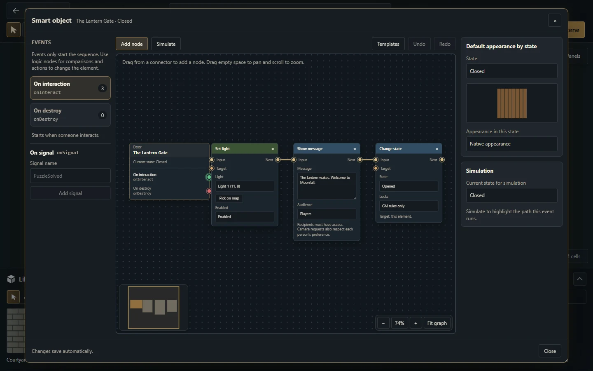

Exemplos de Blueprint para cada kind de objeto
Escolha uma receita completa de door, lever, torch ou region e confira conexões execution/data e os 42 tipos de nó.
Escolha o kind do objeto
Um Objeto Inteligente aceita quatro valores de blueprint.kind. O type de um nó e o kind de uma conexão são contratos separados. Este guia cobre cada um com JSON completo, passos no editor, resultados esperados, validação e prompt de IA específico.
| blueprint.kind | Estados reais | Eventos iniciais | Exemplo completo |
|---|---|---|---|
| door | closed, open, locked | interact, destroy | Porta que alterna e preserva a trava |
| lever | off, on | interact, presence:enter, presence:exit, destroy | Interruptor visível e Empty Object |
| torch | off, on | interact, presence:enter, presence:exit, destroy | Girar e controlar a chama |
| region | empty, occupied | presence:enter, presence:exit, destroy | Placa com primeira entrada/última saída |
Todos os kinds também podem receber um grafo nomeado válido signal:<nome>. Region não tem evento interact direto. Um Empty Object é uma lever sem imagem, privada do GM. Uma tocha composta tem uma luz nativa vinculada; não existe Blueprint kind light.
Entenda os três vocabulários
| Campo | Valores | Exemplo |
|---|---|---|
| blueprint.kind | door, lever, torch, region | A tocha tem estados off/on do mecanismo |
| edge.kind | execution, data | Fluxo e valores tipados |
| node.type | 42 tipos de nó validados | Um grafo completo por tipo de nó |
O editor pode mostrar onInteract, onAreaEnter ou onAreaExited. Os IDs armazenados no grafo/evento são interact, presence:enter e presence:exit. Use os IDs serializados dos exemplos. Não recrie os eventos aposentados change nem os específicos de estado.

Captura existente do Gravewright 0.3.0, interface em inglês. Ela mostra os controles do editor; as receitas para download definem seus próprios grafos.
Baixe os exemplos
Estes JSONs descrevem o subdocumento Blueprint v2 armazenado pelo host. São fixtures para desenvolvimento: não são módulo instalável, projeto completo do Builder ou arquivo de campanha. Recrie os nós no editor ou use os arquivos em testes isolados de contribuição ao host. Este guia não presume um botão de importar JSON no editor de Objetos Inteligentes.
Baixe o pacote completo de exemplos ou o validador. Todos os exemplos usam dados sintéticos originais. O avaliador Python interno serve ao desenvolvimento do código-fonte; módulos de navegador devem usar o SDK público.
Execute a fixture em uma instalação de desenvolvimento
Extraia o pacote de exemplos em data/blueprint-examples, dentro de um checkout descartável da versão documentada. Na raiz do checkout, execute:
uv run --locked python data/blueprint-examples/check-examples.py --host .O verificador configura banco em memória, bloqueia consultas ao banco e chama as funções reais clean_blueprint e evaluate_graph. Ele valida os quatro tipos de objeto, os dois tipos de conexão e os 42 tipos de nó. Isso verifica o formato e as ações previstas. Use também Test behavior para conferir alvos reais, autorização e a cadeia completa no servidor.
Premissas para começar
Um evento apenas inicia um caminho de execução conectado. Ele não alterna, troca arte ou acende chama automaticamente.
Condições e propriedades leem o estado no início do evento. Use ações explícitas para alterar algo.
A ocupação de região vem de comandos autoritativos de tokens e dos filtros de presença.
Simulate prevê um grafo local. Test behavior confere a cadeia no servidor com reversão. Gerar/atualizar e ativar para jogadores são operações separadas.
Definições e vínculos do grafo continuam privados do GM. O jogador recebe a apresentação resultante autorizada.
Como usar a IA para escolher um kind
Meu alvo é o Gravewright 0.3.0, revisão 23ea61b. Leia blueprints.py e o guia do Map Builder. O comportamento desejado é: [descreva disparador, objeto visível, mudanças, alvos e público]. Escolha entre door/lever/torch/region e explique. Parta da receita completa correspondente. Preserve IDs reais de estados/eventos, portas execution/data e permissões do jogador. Entregue JSON completo, instruções no editor e testes úteis como GM/jogador. Diferencie Empty Object de um novo kind e tocha composta de recurso de luz.